Fichas de Animales y naturaleza – 7.º grado (1.º de ESO)
35 recursos de Animales y naturaleza para 7.º grado (1.º de ESO), listos para imprimir: Pest, Rosen, Bosque de Turingia, Carbón y más. Cada ficha muestra el nivel, el número de páginas y una vista previa, y enlaza directamente al producto en TpT.
35 recursos

«Luz y energía en invierno» – Búsqueda del tesoro de lectura

«Dentro de una hormiga» – Búsqueda del tesoro de lectura

«El viaje del salmón río arriba» – Búsqueda del tesoro de lectura

«El misterio del maíz» – Búsqueda del tesoro de lectura

«El lince al acecho» – Búsqueda del tesoro de lectura

«El viaje otoñal de la grulla» – Búsqueda del tesoro de lectura

«El secreto del hongo rojo» – Búsqueda del tesoro de lectura

«El tiburón cazador» – Búsqueda del tesoro de lectura

«El misterio de la salamandra» – Búsqueda del tesoro de lectura

«Anatomía del oso pardo» – Búsqueda del tesoro de lectura

«El zorro y su anatomía» – Búsqueda del tesoro de lectura

«El secreto del manzano» – Búsqueda del tesoro de lectura

«Dentro de la célula animal» – Búsqueda del tesoro de lectura

«Dentro del hormiguero» – Búsqueda del tesoro de lectura

Animales de América Latina – Spanish Reading BUNDLE | Animal Fichas

Pest – Ficha de lectura: texto con huecos, comprensión auditiva y sopa de letras

Rosen – Ficha de lectura: texto con huecos, comprensión auditiva y sopa de letras

Bosque de Turingia – Ficha de lectura: texto con huecos, comprensión auditiva y sopa de letras

Beta vulgaris subsp. vulgaris var. Gp Conditiva – Ficha de lectura: texto con huecos, comprensión auditiva y sopa de letras
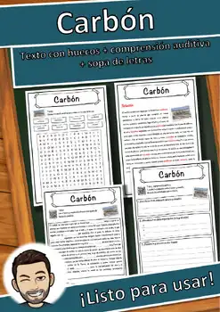
Carbón – Ficha de lectura: texto con huecos, comprensión auditiva y sopa de letras
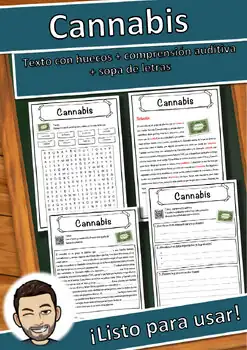
Cannabis – Ficha de lectura: texto con huecos, comprensión auditiva y sopa de letras
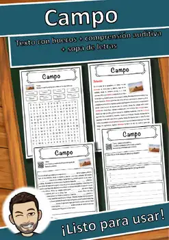
Campo – Ficha de lectura: texto con huecos, comprensión auditiva y sopa de letras
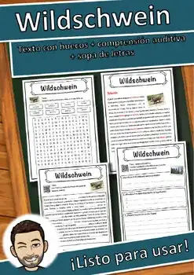
Jabalí – Ficha de lectura: texto con huecos, comprensión auditiva y sopa de letras
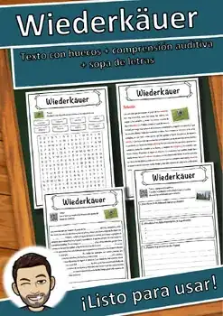
Rumiantes – Ficha de lectura: texto con huecos, comprensión auditiva y sopa de letras
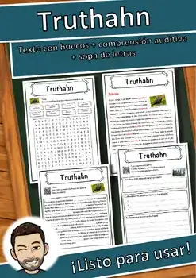
Pavo – Ficha de lectura: texto con huecos, comprensión auditiva y sopa de letras
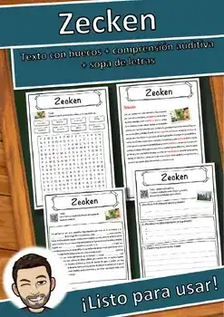
Garrapatas – Ficha de lectura: texto con huecos, comprensión auditiva y sopa de letras
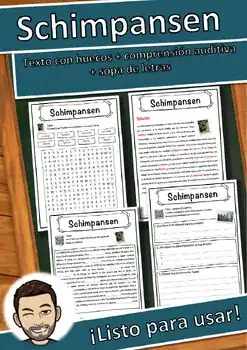
Chimpancés – Ficha de lectura: texto con huecos, comprensión auditiva y sopa de letras
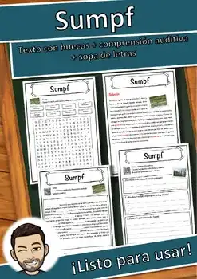
Pantano – Ficha de lectura: texto con huecos, comprensión auditiva y sopa de letras
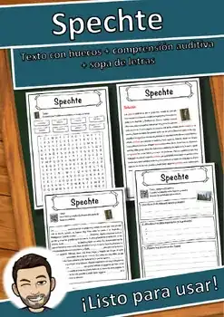
Pájaros carpinteros – Ficha de lectura: texto con huecos, comprensión auditiva y sopa de letras
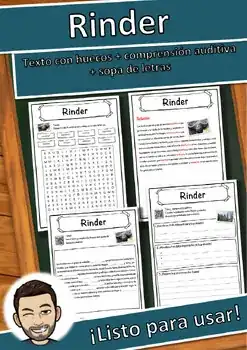
Ganado bovino – Ficha de lectura: texto con huecos, comprensión auditiva y sopa de letras
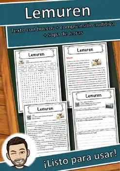
Lémures – Ficha de lectura: texto con huecos, comprensión auditiva y sopa de letras
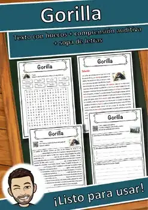
Gorila – Ficha de lectura: texto con huecos, comprensión auditiva y sopa de letras
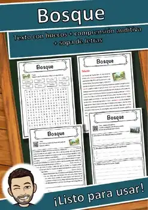
Bosque – Ficha de lectura: texto con huecos, comprensión auditiva y sopa de letras
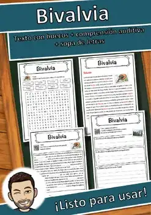
Bivalvia – Ficha de lectura: texto con huecos, comprensión auditiva y sopa de letras
Bison bonasus – Ficha de lectura: texto con huecos, comprensión auditiva y sopa de letras
No se encontraron recursos. Prueba con otra palabra o con otro filtro.